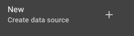

.
.
The Data Sources Page page allows you to create , edit and delete data sources
on your system.
You can filter the list of data sources by typeing the data source name or data source type in the filter
input.
Data sources can be enabled/disabled by toggling the switch .
To add a new data source click on the top selection
then selct your data source type from the data source type drop down menu. All poling data source have the option to poll periodically or by a cron pattern. Checking Quantize will cause the data source startup to be delayed so that pollings occur at a "rounded" point in time (e.g. if polling is every 10 seconds, polls will occur on the 10th second, the 20th second, etc). Otherwise, polling will begin immediately.
To edit a data source click on the data source name in the list and their attribues will apear on the right in the edit data source container. Edits will not take effect untill the data sourceis saved. To delete a data source,click on the delete button.